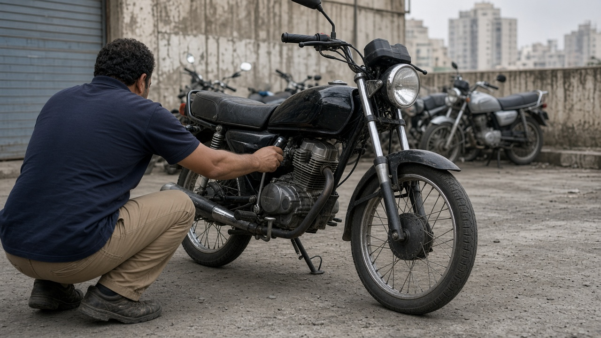
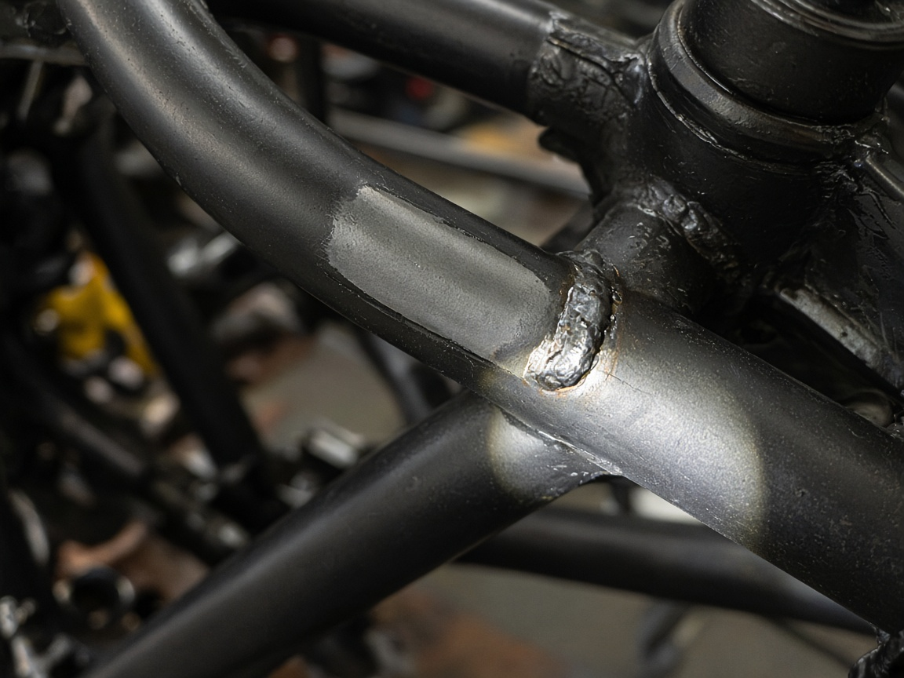
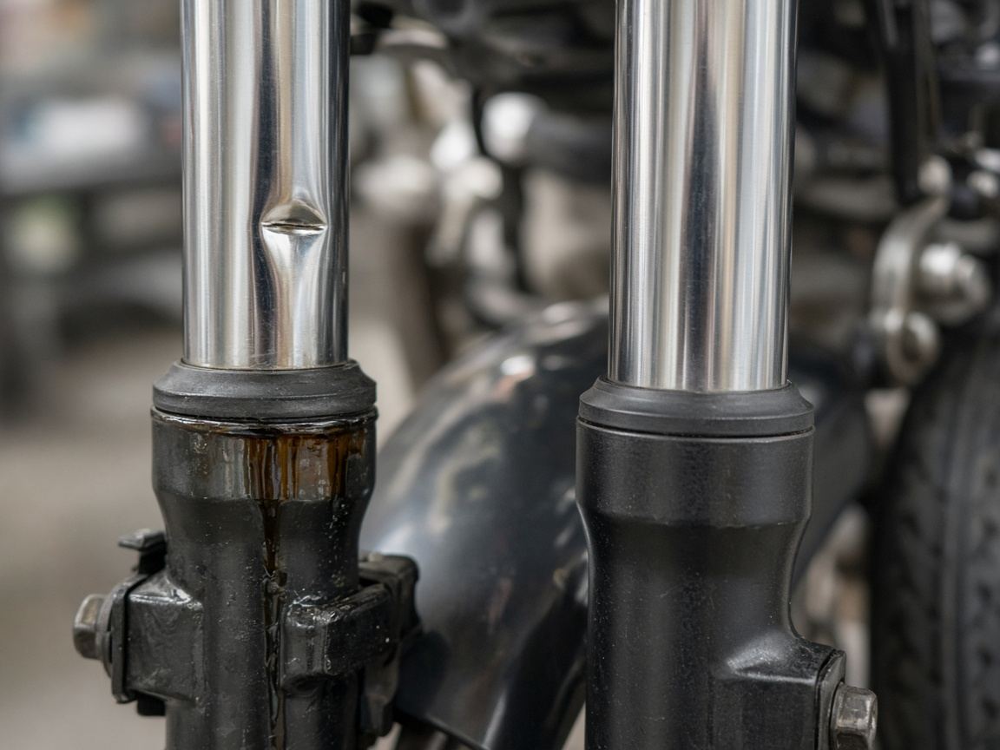
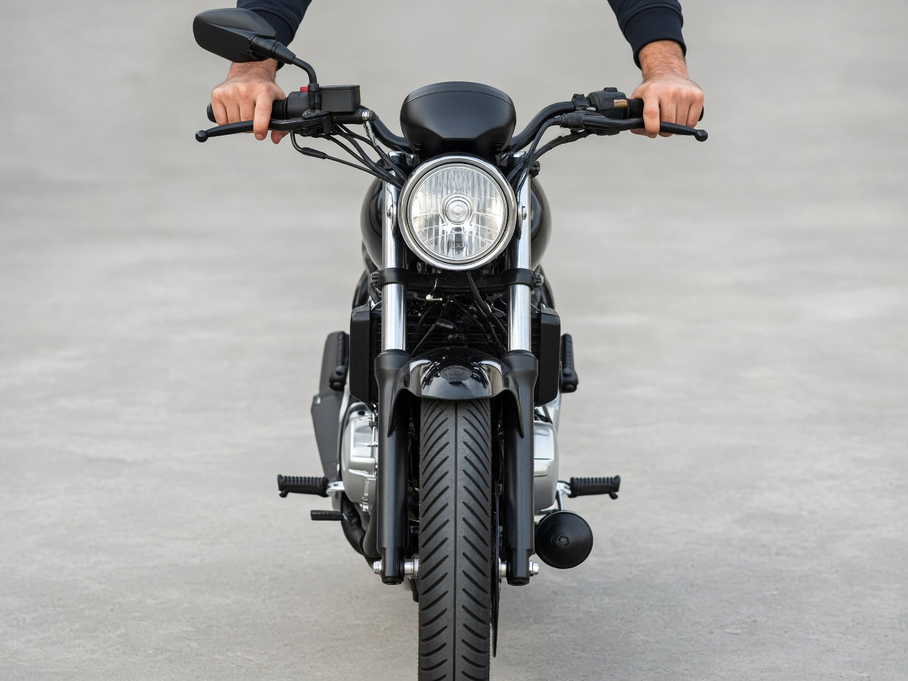
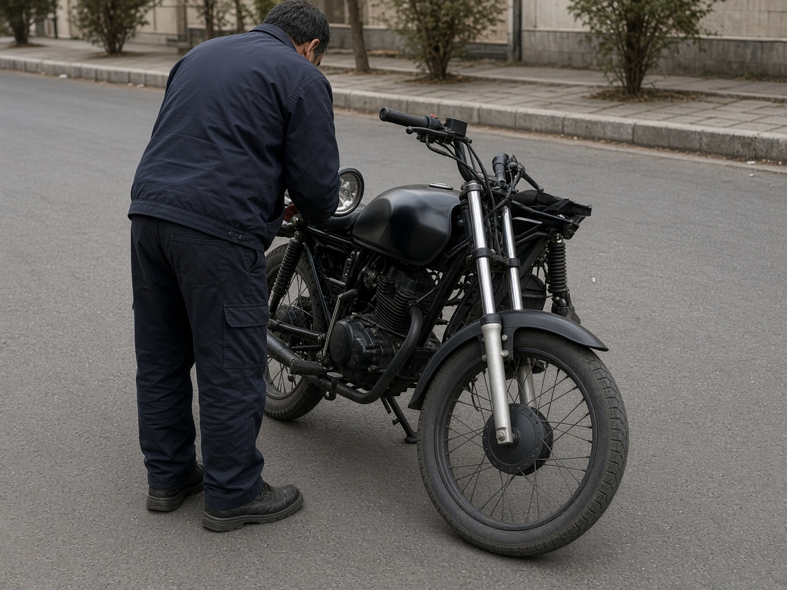

تشخیص موتورسیکلت تصادفی؛ شاسی، دوشاخ و فرمان چه می گویند؟
فرض کنید برای دیدن یک موتور ۱۲۵ سیسی کارکرده رفتهاید. فلاپها براقاند، اهرم ترمز عوض شده و فروشنده میگوید موتور فقط یکبار زمین خورده و شاسی سالم است. ظاهر موتور همیشه همهچیز را نشان نمیدهد؛ انرژی ضربه معمولاً از چرخ جلو به دوشاخ و فرمان و بعد به شاسی میرسد.
تشخیص موتورسیکلت تصادفی یعنی جدا کردن خط و خش معمولی از آسیب ساختاری. در این راهنمای کارماچک برای بررسی موتورسیکلت سه نقطهای را میبینیم که اثر ضربه را بیشتر نگه میدارند: شاسی، دوشاخ جلو و فرمان.
تشخیص موتورسیکلت تصادفی از شاسی، دوشاخ و فرمان شروع میشود، نه از فلاپ تمیز. ترک، جوش غیرعادی، خمیدگی لوله دوشاخ، نشتی کمک و فرمان کج یا گیرکرده نشانهاند، نه حکم قطعی. چند نشانه همزمان را جدی بگیرید و اگر راستای چرخ یا حرکت فرمان مشکوک است، پیش از تست حرکت بررسی تخصصی کنید.
خلاصه در یک دقیقه
- خط روی فلاپ یا اهرم خمشده، زمینخوردگی را محتمل میکند؛ سلامت شاسی را ثابت یا رد نمیکند.
- شاسی را از ترک، تغییر شکل، جوش تعمیر و رنگ تازه روی فلز ببینید، نه فقط از بیرون پلاستیکها.
- لولههای دوشاخ باید موازی باشند؛ فرورفتگی، اختلاف طول ظاهری و نشتی روغن مسیر بررسی را عوض میکند.
- فرمان باید در تمام مسیر نرم بچرخد. گیر کردن، لقی پشت فرمان یا ناهماهنگی فرمان با چرخ جلو را نادیده نگیرید.
- اگر چند نشانه با هم دیده شد، تست حرکت را تا روشن شدن وضعیت شاسی و دوشاخ عقب بیندازید.
موتورسیکلت تصادفی یعنی چه؟
موتورسیکلت تصادفی یعنی وسیلهای که در برخورد با خودرو، مانع یا سطح جاده، ضربهای بیشتر از یک زمینخوردن سبک دیده است. زمینخوردگی معمولاً اهرم، جاپایی، سر فرمان، اگزوز یا فلاپ را درگیر میکند. تصادف جدیتر میتواند راستای دوشاخ، کرپی، محل اتصال فرمان و خود شاسی را جابهجا کند.
شاسی موتورسیکلت یعنی اسکلت فلزی که موتور، چرخها و مجموعه فرمان روی آن سوار شدهاند. در موتورهای شهری رایج ایران، مثل طرحهای ۱۲۵ سیسی و اسکوترهای جعبهدار، بخشی از این اسکلت زیر فلاپ یا کفپایی پنهان است. به همین دلیل تمیزی ظاهر، جای دیدن شاسی را نمیگیرد.
شاسی موتورسیکلت چه سرنخ هایی دارد؟
شاسی اثر ضربه را بیشتر از پلاستیک نگه میدارد. موتور را روی سطح صاف بگذارید و از دو طرف و از زیر، لولههای در دسترس را ببینید. محل اتصال فرمان به شاسی، بازوی عقب و نقاط نصب موتور از جاهایی هستند که ضربه خودش را نشان میدهد.
- ترک یا چینخوردگی روی لوله شاسی
- فرورفتگی یا خمیدگی که با تقارن سمت مقابل نمیخواند
- جوش ناهموار، سنبادهکاری تازه یا رنگ موضعی روی فلز
- پیچهای غیراستاندارد یا آثار باز و بست مکرر روی اتصالات اصلی
- شماره شاسی ناخوانا، مخدوش یا ناسازگار با مدارک
هر جوش قابل مشاهده تعمیر نیست. خیلی از شاسیها از کارخانه جوش دارند. تفاوت جوش کارخانهای با جوش تعمیر به شناخت همان مدل نیاز دارد؛ اگر مطمئن نیستید، آن نقطه را نشانه قطعی تصادف نگذارید، اما از فهرست مشکوکها خارجش نکنید.

دوشاخ جلو چه علائمی از ضربه نشان می دهد؟
دوشاخ جلو همان دو لوله تعلیق است که چرخ جلو را به کرپی و فرمان وصل میکند. در برخورد از روبهرو یا زمینخوردن سنگین، این مجموعه زودتر از شاسی عقب تغییر شکل میدهد.
از روبهرو به دو لوله نگاه کنید. باید تقریباً موازی باشند و فاصلهشان در بالا و پایین یکسان به نظر برسد. اگر یک لوله جلوتر، عقبتر یا کوتاهتر دیده میشود، حدس کارکرد عادی کافی نیست.
لوله ها، کرپی و کاسه نمد
فرورفتگی روی لوله کروم، خط عمیق یکطرفه و آثار گیره یا پرس، مسیر بررسی را از سرویس ساده جدا میکند. نشتی روغن روی کاسهنمد را هم ببینید. نشتی میتواند از عمر کاسهنمد باشد، نه لزوماً از تصادف؛ اما نشتی همراه با خمیدگی یا خراش غیرعادی، احتمال ضربه را بالاتر میبرد.
کرپی بالا و پایین را هم نگاه کنید. ترک، رنگ تازه، پیچ شل یا جابهجایی فرمان داخل کرپی یعنی مجموعه جلو باز شده است. باز شدن همیشه تصادف نیست؛ تنظیم بلبرینگ فرمان هم گاهی همین کار را میطلبد. باید علت باز شدن مشخص شود.

در راهنمای بازرسی موتورسیکلت بریتانیا، دوشاخ و کرپی جزو بخش فرمان و ایمنی بررسی میشوند و تغییر شکل بیش از حد دسته فرمان یا دوشاخ، ایراد جدی حساب میشود. این متن قانون ایران نیست؛ فقط نشان میدهد مجموعه جلو در بازرسی فنی جایی تزئینی ندارد.
فرمان و راستای چرخ چه چیزی را لو می دهند؟
فرمان سالم روی سطح صاف، بدون گیر و بدون لقی اضافه، از یک قفل تا قفل مقابل میچرخد. اگر در بخشی از مسیر سفت میشود، تقه میزند یا وسط مسیر «نقطه سخت» دارد، بلبرینگ فرمان یا راستای دوشاخ باید دیده شود.
از جلو بایستید. چرخ جلو را در مسیر مستقیم بگذارید و به فرمان نگاه کنید. اگر فرمان صاف است و چرخ کج، یا چرخ صاف است و فرمان کج، یکی از اینها جابهجا شده: دسته فرمان، کرپی یا خود دوشاخ. خراش روی سر دسته و اهرمها بیشتر زمینخوردگی را نشان میدهد تا سلامت شاسی را.

لقی پشت فرمان
با ترمز جلو گرفته، فرمان را آرام به جلو و عقب تکان دهید. حرکت اضافی در محل اتصال فرمان به شاسی میتواند از بلبرینگ فرمان باشد. این ایراد همیشه حاصل تصادف نیست؛ تنظیم نادرست یا کارکرد بالا هم همین حس را میدهد. وقتی لقی با آثار ضربه روی دوشاخ جمع شود، احتمال آسیب ساختاری بیشتر میشود.
در دفترچه مالک هوندا CB125F آمده که گاز باید در تمام موقعیتهای فرمان نرم باز و بسته شود. اگر با چرخاندن فرمان، سیم گاز گیر میکند یا دسته گاز برنمیگردد، ممکن است دسته فرمان خم شده یا مسیر سیم تغییر کرده باشد. این را پیش از راندن روشن کنید.
پیش از معامله، شاسی و فرمان را جدی بگیرید
اگر جوش شاسی، راستای دوشاخ یا حرکت فرمان برایتان مبهم است، کارشناسی موتورسیکلت پیش از خرید کمک میکند نشانه را از آسیب ساختاری جدا کنید.
جزئیات کارشناسی موتورسیکلتتشخیص موتورسیکلت تصادفی را چطور مرحله به مرحله انجام دهیم؟
ترتیب مهم است. اول ایمنی و اصالت، بعد ساختار، بعد حرکت. برعکس این مسیر، یعنی اول راندن و بعد نگاه به شاسی، ریسک بیدلیل میسازد.
- مدارک و شماره شاسی:مدل، شماره شاسی و شماره موتور را با سند تطبیق دهید. اگر عدد مخدوش است، معامله را تا استعلام رسمی نگه دارید.
- نگاه از فاصله:موتور را روی سطح صاف بگذارید و از جلو، عقب و دو طرف راستای چرخها، دوشاخ و باک را ببینید.
- شاسی در دسترس:فلاپهایی که بدون آسیب باز میشوند، در صورت اجازه مالک کنار بزنید و لولهها را از ترک، خم و جوش غیرعادی بگردید.
- دوشاخ و کرپی:توازی لولهها، فرورفتگی، نشتی روغن و وضعیت پیچهای کرپی را ثبت کنید.
- حرکت فرمان:از قفل تا قفل بچرخانید. گیر، نقطه سخت، صدای غیرعادی و لقی پشت فرمان را جدا یادداشت کنید.
- تست حرکت فقط اگر ایمن است:در مسیر کوتاه و خلوت به کشیدن به یک سمت، لرزش فرمان و رفتار ترمز توجه کنید. اگر پیش از حرکت شک ساختاری دارید، سوار نشوید.

اگر اسکوتر اتوماتیک میخرید، بعد از این سه نقطه باید انتقال قدرت را هم جدا ببینید. راهنمای کارشناسی انتقال قدرت، ترمز و برق اسکوتر همان بخش را پوشش میدهد و با بررسی شاسی جایگزین نمیشود.
کدام ترکیب نشانه ها جدی تر است؟
یک نشانه بهتنهایی معمولاً کافی نیست. چند نشانه هممسیر، احتمال آسیب ساختاری را بالاتر میبرد. جدول پایین برای قضاوت سریع است، نه برای صدور حکم خرید یا رد قطعی.
| آنچه دیده می شود | معنی محتمل | برای تشخیص تصادف کافی است؟ |
|---|---|---|
| خط روی فلاپ یا اهرم خم شده | زمین خوردگی یا برخورد سبک ظاهری | خیر؛ شاسی را جدا ببینید |
| جوش یا رنگ تازه روی لوله شاسی | تعمیر ساختاری یا ترمیم زنگ زدگی | خیر؛ علت تعمیر باید روشن شود |
| فرورفتگی یا ناهمراستایی دوشاخ | ضربه از جلو یا زمین خوردن سنگین | به تنهایی قوی است؛ با فرمان جمع شود جدی تر است |
| فرمان کج نسبت به چرخ جلو | جابجایی دسته، کرپی یا دوشاخ | خیر؛ منبع انحراف باید پیدا شود |
| شاسی تعمیرشده به اضافه دوشاخ خم و فرمان گیرکرده | احتمال آسیب ساختاری بالا | هنوز قطعی نیست؛ برای معامله بدون بررسی تخصصی پرریسک است |
خریدارها معمولاً کجا اشتباه می کنند؟
خیلی از خریدارها موتور را از دو متری میبینند و اگر چراغ و فلاپ سالم باشد، پرونده تصادف را میبندند. در موتورهای فلاپدار، همین فاصله کافی است تا خم شاسی دیده نشود.
اشتباه دوم، قبول توضیح «فقط زمین خورده» بدون دیدن دوشاخ است. زمینخوردگی میتواند سبک باشد؛ میتواند همان ضربهای باشد که کرپی را جابهجا کرده. تفاوت را قطعه تعویضی مشخص نمیکند؛ راستای مجموعه جلو مشخص میکند.
اشتباه سوم، تست حرکت با موتوری است که فرمانش سفت یا چرخ جلو کج است. اگر پایداری مشکوک باشد، راندن کمکتان نمیکند؛ خطر را بیشتر میکند.
موتوری که بعد از تعمیر مدتی خوابیده، ممکن است هم اثر تصادف داشته باشد و هم فرسودگی زمانی. اگر آگهی روی کارکرد پایین و خواب طولانی تأکید دارد، هزینه راهاندازی را جدا از وضعیت شاسی برآورد کنید. راهنمای خرید موتور خوابیده و برآورد هزینه راه اندازی همان بخش را جدا توضیح میدهد.
چه زمانی بررسی تخصصی لازم است؟
بازدید شخصی برای غربالگری خوب است. وقتی نشانه به شاسی، توازی دوشاخ یا حرکت فرمان برسد، اندازهگیری و تشخیص تفاوت جوش کارخانه با تعمیر، کار چشم غیرمسلح نیست.
کارماچک خدمات کارشناسی خودرو و موتورسیکلت را برای بررسی فنی، شاسی و عوامل مؤثر بر ارزش معامله ارائه میدهد. فقط ایراد خودرو را شناسایی نمیکنیم؛ اثر آن روی هزینه تعمیر و ارزش واقعی معامله را هم مشخص میکنیم.
اگر فروشنده اجازه باز کردن فلاپ یا حضور کارشناس را نمیدهد، همان محدودیت را در تصمیم قیمت لحاظ کنید. بخشی که دیده نشده، سالم اعلامشده نیست.
جمع بندی
تشخیص موتورسیکلت تصادفی با سه سؤال جلو میرود: شاسی تعمیر یا تغییرشکل دارد؟ دوشاخ موازی و بدون فرورفتگی است؟ فرمان با چرخ جلو همراستا و بدون گیر حرکت میکند؟ جواب مبهم به هر کدام، معامله را از «ظاهر تمیز» به «نیاز به بررسی» میبرد.
هیچکدام از این نشانهها بهتنهایی کافی نیست که با قاطعیت بگویید موتور باید کنار گذاشته شود یا کاملاً سالم است. ترکیب نشانهها، کیفیت تعمیر و قیمت پیشنهادی با هم معنی پیدا میکنند. اگر شک باقی ماند، پیش از بیعانه سراغ بررسی تخصصی بروید.
اگر درباره شاسی یا دوشاخ مطمئن نیستید
یک گزارش روشن از شاسی، دوشاخ و فرمان، بهتر از حدس کنار موتور است. درخواست بررسی را ثبت کنید تا وضعیت ساختاری پیش از معامله مشخص شود.
درخواست کارشناسی موتورسیکلتسؤالات متداول
از کجا بفهمیم موتورسیکلت تصادفی است؟
از شاسی، دوشاخ و فرمان شروع کنید. ترک یا جوش غیرعادی روی شاسی، خمیدگی یا ناهمراستایی دوشاخ، و فرمان کج یا گیرکرده مهمتر از خط فلاپ هستند. یک نشانه کافی نیست؛ چند نشانه هممسیر را جدی بگیرید و در صورت تردید، کارشناسی موتورسیکلت را پیش از پرداخت انجام دهید.
خط روی فلاپ یعنی شاسی آسیب دیده است؟
خیر. خط فلاپ یا اهرم خمشده بیشتر زمینخوردگی ظاهری را نشان میدهد. شاسی ممکن است سالم باشد و ممکن است زیر پلاستیک تعمیر شده باشد. فلاپ را کنار بزنید یا از کارشناس بخواهید لولههای در دسترس را ببیند.
نشتی دوشاخ همیشه از تصادف است؟
نه. کاسهنمد کمک با کارکرد و زمان هم روغن پس میدهد. نشتی وقتی به ضربه نزدیک میشود که با فرورفتگی لوله، ناهمراستایی یا آثار تعمیر کرپی همراه باشد. پیش از خرید باید مشخص شود نشتی فقط سرویس میخواهد یا مجموعه جلو تغییر شکل داده است.
فرمان کج یعنی موتور را نخریم؟
فرمان کج یعنی مجموعه جلو جابهجا شده یا درست جمع نشده است. گاهی با تنظیم کرپی و دسته فرمان درست میشود و گاهی دوشاخ یا شاسی درگیر است. تا علت روشن نشود، نه رد قطعی منطقی است و نه خرید با فرض یک تنظیم ساده.
زمین خوردگی با تصادف موتور چه فرقی دارد؟
زمینخوردگی معمولاً قطعات بیرونی مثل اهرم، سر فرمان و فلاپ را درگیر میکند. تصادف جدیتر میتواند دوشاخ، کرپی و شاسی را از راستا خارج کند. شدت را از روی داستان فروشنده نسنجید؛ از روی راستای مجموعه جلو و وضعیت فلز شاسی بسنجید.
بدون تست حرکت می شود تصادف را تشخیص داد؟
بخشی از نشانهها در حالت توقف دیده میشود: شاسی، توازی دوشاخ، حرکت فرمان و ناهماهنگی چرخ با دسته. کشیدن به یک سمت یا لرزش معمولاً در حرکت معلوم میشود. اگر پیش از حرکت شک ساختاری دارید، تست را عقب بیندازید و بررسی را کامل کنید.